Scalar is a quantity which possesses magnitude only, for example, distance, speed, mass and density.
Vector is a quantity which possesses both magnitude and direction, for example, displacement, velocity, acceleration and force.
Adding vectors
When two vectors are added to produce a third vector, this vector is called the resultant.
The resultant of two parallel vectors acting in the same direction:
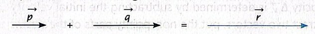
Fig. 9.1
The resultant of two parallel vectors acting in the opposite directions:
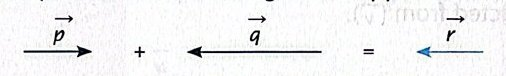
Fig. 9.2
Using the ‘tip-to-tail’ method to find the resultant of two non-parallel vectors:
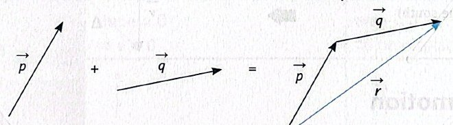
Fig. 9.3
9.2 Distance and displacement
Comparison between distance and displacement:
Distance
Displacement
the length of the path taken
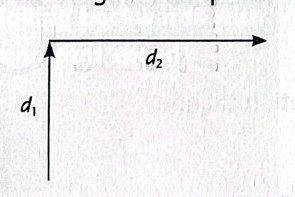
distance travelled = d₁ + d₂
SI unit: metre (m)
the shortest distance measured from the starting position to the final position
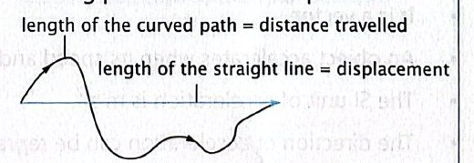
independent of the path taken by an object
SI unit: metre (m)
9.3 Speed and velocity
Comparison between speed and velocity:
Speed
Velocity
It measures how fast an object moves.
It measures how fast and in which direction an object moves.
It is defined as the distance travelled per unit time.
It is defined as the displacement per unit time.
Instantaneous speed is the speed of an object at a certain instant.
Instantaneous velocity is the velocity of an object at a certain instant.
Average speed = Total distance travelledTime taken
Average velocity = Total displacement travelledTime taken
SI unit: metre per second (m s–1)
SI unit: metre per second (m s–1)
DSE 2018 (Paper 1A) Q7Example 3(b)Exam MCQ1
The change in velocity Δv⃗ is determined by subtracting the initial velocity u⃗ from the final velocity v⃗. To subtract two vectors, put the non-pointy parts of the arrows together and then draw the resultant vector from the head of the vector that is being subtracted (u⃗) to the head of the vector that is being subtracted from (v⃗).
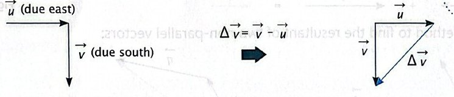
Fig. 9.4
DSE 2016 (Paper 1A) Q5
9.4 Uniform motion
An object is in uniform motion if it travels with a constant velocity.
The speed and the direction of motion remain unchanged during uniform motion.
9.5 Acceleration
Acceleration a is defined as the rate of change of velocity.
It is a vector.
An object accelerates when its speed and/or its direction of motion change.
The SI unit of acceleration is m s–2.
The direction of acceleration can be represented by the sign +/– .
An object is in uniformly accelerated motion if it moves with a constant acceleration.
a = v – ut
where u is the initial velocity, v is the final velocity and t is the time taken.
9.6 Motion graphs
The slope of the displacement–time graph (s–t graph) gives the velocity of the object. The sign (+/–) of the slope gives the direction of the velocity.
The slope of the velocity–time graph (v–t graph) gives the acceleration of the object. The sign (+/–) of the slope gives the direction of the acceleration.
The area under the v–t graph gives the displacement of the object.
The area under the acceleration–time graph (a–t graph) gives the change of velocity of the object.
curve getting steeper (slope getting more +ve) ⇒ velocity getting more +ve
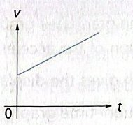
+ve slope
⇒ +ve acceleration
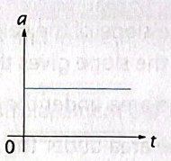
slope = 0
⇒ uniform acceleration
Moving forwards with a uniformly decreasing speed
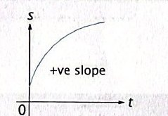
curve getting flatter (slope getting less +ve) ⇒ velocity getting less +ve
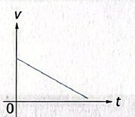
–ve slope
⇒ –ve acceleration / deceleration
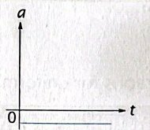
slope = 0
⇒ uniform acceleration
Moving backwards with a uniformly increasing speed
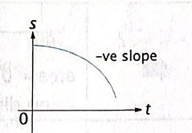
curve getting steeper (slope getting more –ve) ⇒ velocity getting more –ve
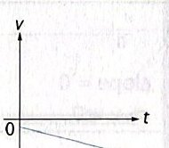
–ve slope
⇒ –ve acceleration / deceleration
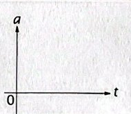
slope = 0
⇒ uniform acceleration
Moving backwards with a uniformly decreasing speed
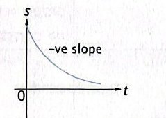
curve getting flatter (slope getting less –ve) ⇒ velocity getting less –ve
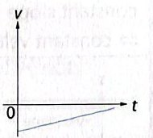
+ve slope
⇒ +ve acceleration
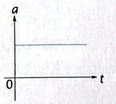
slope = 0
⇒ uniform acceleration
9.7 Equations of uniformly accelerated motion
An object travels with uniform acceleration a from an initial velocity u to a final velocity v. Fig. 9.5 shows the v–t graph of the object.
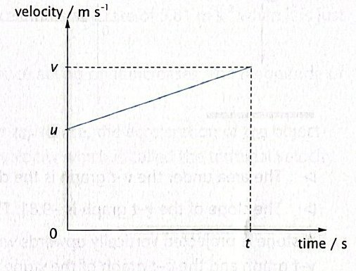
Fig. 9.5
a = change in velocity per unit time
= v – ut ......(1)
The displacement of the object can be found from the area under the v–t graph.
s = 12(u + v)t ......(2)
From (1), we get v = u + at. Substitute this into (2),
s = ut + 12at2 ......(3)
From (1), we get t = v – ua. Substitute this into (2),
The above equations can only be applied when the motion taking place is in a straight line and the acceleration is kept constant.
v2 = u2 + 2as ......(4)
The following shows that the average velocity vavg. over a time interval (t₁, t₂) is equal to the instantaneous velocity vinst. at t = t₁ + t₂2. Suppose the velocities at t₁ and t₂ are v₁ and v₂, respectively.
The above tells us that if an object undergoes a uniformly accelerated motion in a certain time interval, its average velocity in this interval is equal to its instantaneous velocity at the middle of this interval.
9.8 Vertical motion in air
Under gravity only
If an object is subject to the gravity only, it accelerates towards the Earth at a constant rate g which is roughly equal to 9.81 m s–2.
Examples include an object released from a height and an object thrown vertically upwards.
The acceleration due to gravity is always directed vertically downwards. If the upward direction is taken as positive, a minus (–) sign is assigned to g to indicate its direction.
The process in which an object falls under gravity only is known as ‘free falling’.
A stone is released from a certain height (Fig. 9.6(a)). The v–t graph and the a–t graph of the stone are shown below. Take upward motion as positive.
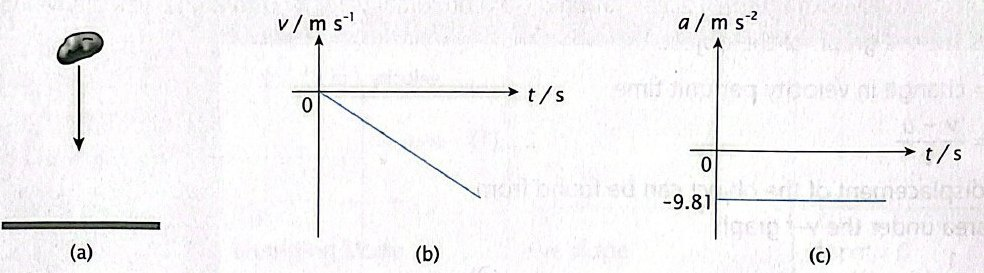
Fig. 9.6
The area under the v–t graph is the displacement of the stone.
The slope of the v–t graph is –9.81. Therefore, the acceleration is –9.81 m s–2.
A stone is projected vertically upwards with an initial velocity u (Fig. 9.7(a)). The s–t graph, v–t graph and the a–t graph of the stone are shown below.
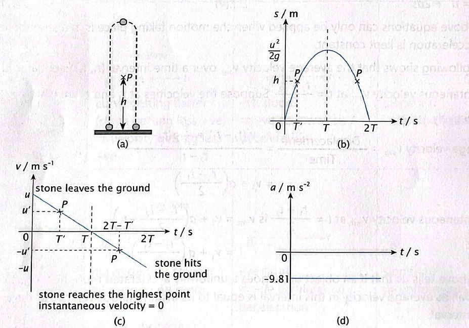
Fig. 9.7
The stone reaches its highest point of height u²2g at t = T
The motion is symmetric. This can be illustrated by the symmetries about the dotted line in the s–t graph and the v–t graph.
The stone passes through a point P of height h when it goes up. It passes through P again when it falls.
From the s–t graph, the stone takes a time (T – T′) to go from P to its highest point. It takes the same time to fall back to P.
From the v–t graph, the magnitudes of velocity at t = T′ and t = (2T – T′) are the same. This means the stone has the same speed at the two instants it passes through P.
Under gravity and air resistance
The force exerted by the air to oppose the motion of a moving object is called the air resistance.
The magnitude of the air resistance increases with the speed of the object.
Consider an object which is released from rest. It accelerates at a rate of 9.81 m s–2 when it is just released. Take downward motion as positive.
As the velocity of the object increases, the air resistance acting on it increases. The magnitude of the acceleration of the object will then decrease.
When the weight of the object is balanced by the air resistance, the acceleration of the object becomes zero. The object now falls with a constant velocity which is called the terminal velocity.
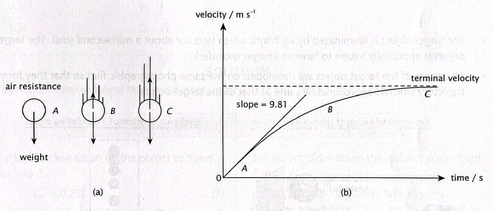
Fig. 9.8
9.9 Devices used for recording motion
Data-logging system
A data-logging system consists of three main components: interface, computer software and various types of sensors.
A motion sensor is used to study the motion of an object in a data-logging experiment.
Time varying data collected by the sensor will be sent to the computer via the interface.
The computer software can analyse and present the results in graph and table forms.
The s–t graph, v–t graph and a–t graph can be generated and displayed on a computer screen.
Advantages of using data-logging system:
The data can be collected with high accuracy.
It can measure changes over a very short period of time.
DSE 2015 (Paper 1B) Q4Exam Q4
Stroboscopy
Stroboscopy is a method used to capture instantaneous images of fast-moving objects.
Stroboscope is able to emit intense flashlight at an adjustable frequency.
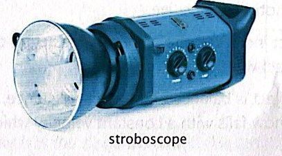
Fig. 9.9
The target object is illuminated by flashlight which lasts for about a millisecond (ms). The target object is apparently frozen to have its images recorded.
All images of the target object are developed on the same photographic film so that they form a trajectory which is approximately same as that of the target object.
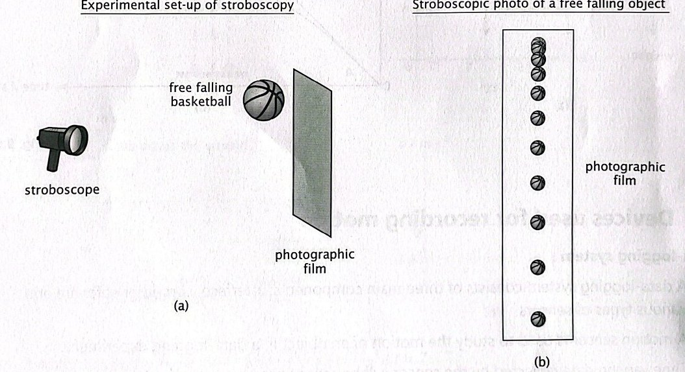
Fig. 9.10
The time interval between two successive images on the stroboscopic photo is 1f, where f is the flashing frequency. For an image taken at time t, its distance from the first image on the stroboscopic photo is equal to the displacement of the object at time t.
DSE 2017 (Paper 1B) Q4Exam MCQ28–29; Q11
Worked Examples
Example 1
An object is projected up a smooth inclined plane from X as shown in Fig. 9.11. The length of the inclined plane is L. When the object reaches the top Z, its velocity is zero. If the object takes time t to reach Y which is 0.75L away from X, find the time taken by the object to travel from Y to Z.
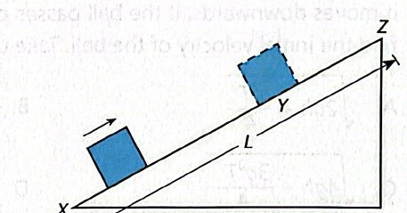
Fig. 9.11
A. 0.5tB. tC. 1.5tD. 2t
Answer: B
SOLUTION
This question can be solved by two different ways:
General approach
Let t′ be the time taken by the object to travel from Y to Z.
The object slides down the inclined plane from Z to X.
Let ttotal and t′ be the times taken by the object to travel from Z to X and from Z to Y, respectively.
Applying s = ut + ½at²,
from Z to X,
L = ½attotal² ......(i)
from Z to Y,
LYZ = 0.25L = ½at′²⇒ L = 2at′² ......(ii)
By (i) and (ii),
½attotal² = 2at′²ttotal = 2t′
Since ttotal = t + t′,
t + t′ = 2t′t′ = t
Example 2
A ball is thrown vertically upwards from the ground as shown. It passes point P of height h when it moves upwards. Then, it passes P again when it moves downwards. If the ball passes point P twice in a time interval of T, find the initial velocity of the ball. Take upward motion as positive.
This question can be solved by two different ways:
General approach
First, the answer choices are expressed in terms of h, g and T, so a formula involving u, s, a and t is required, i.e. s = ut + ½at²
Next, consider that the ball passes through P twice—once on the way up and once on the way down. There will be two values of time t at P: one on the way up and one on the way down. Let u be the initial velocity of the ball.
h = ut – ½gt²
Write the above equation in the form ax² + bx + c = 0 and use the quadratic formula x = –b ± √(b² – 4ac)2a :
gt² – 2ut + 2h = 0t = 2u ± √(4u² – 8gh)2g
When t = 2u – √(4u² – 8gh)2g, the ball passes through P on the way up.
When t = 2u + √(4u² – 8gh)2g, the ball passes through P on the way down.
Finally, find the relationship between T and the above two moments.
(b) Average speed = Total distance travelledTime taken
= 30600(60)(30) + (60)(15)= 11.3 m s–11Average velocity = Total displacementTime taken= 22000(60)(30) + (60)(15)= 8.15 m s–1
The average velocity is 8.15 m s–1 at S55.0°E. 1+1
Example 4
The displacement–time graph of an object is shown below.
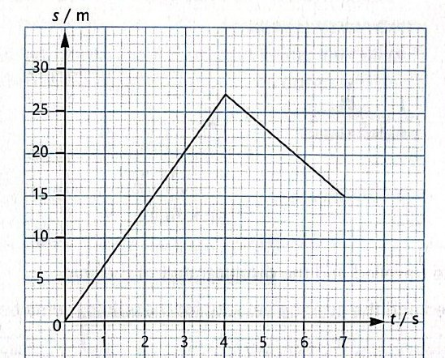
Fig. 9.14
(a) Find the total distance travelled and the displacement of the object. (2 marks)
(b) Find the slope of the displacement–time graph from
(i) t = 0 s to t = 4 s, and (1 mark)
(ii) t = 4 s to t = 7 s. (1 mark)
(c) Describe the motion of the object. (2 marks)
(d) Sketch the velocity–time graph of the object. (2 marks)
SOLUTION
(a) Total distance travelled = 27 + (27 – 15) = 39 m 1
Displacement = 15 m 1
(b) (i) Slope = 27 – 04 = 6.75 m s–11
(ii) Slope = 15 – 273 = –4 m s–11
(c) In the first 4 s, the object is moving forward with a uniform velocity of 6.75 m s–1. 1
In the last 3 s, the object is moving backwards with a uniform velocity of –4 m s–1. 1
(d)
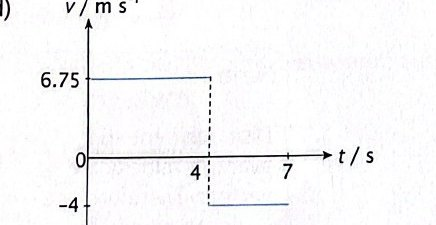
Correct scales and axes 1
Correct shape and values 1
Example 5
An object is projected upwards from a platform and it reaches the ground after 8 seconds. Fig. 9.15 shows the velocity–time graph of the object, starting from the instant the object is released.
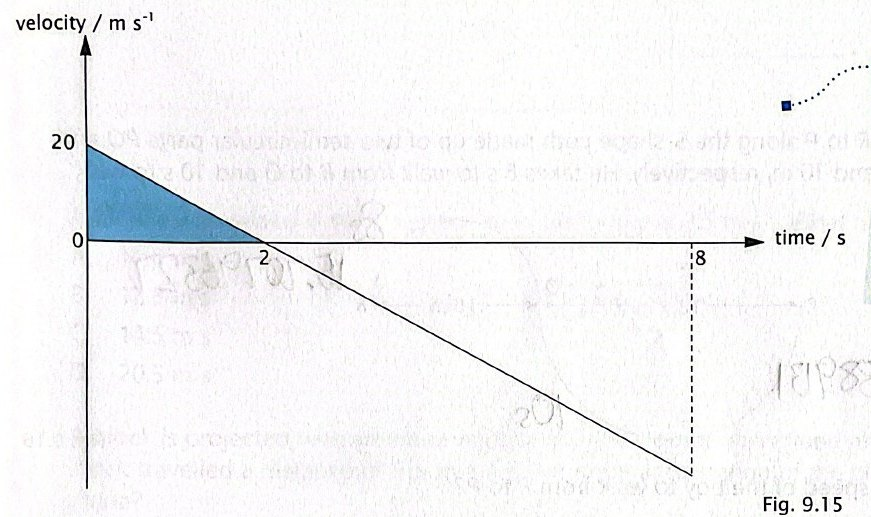
Fig. 9.15
(a) Find the velocity of the object when it reaches the ground. (2 marks)
(b) State the physical meaning of the shaded area in the figure above. (2 marks)
(c) Find the height of the object above the ground when it is projected. (3 marks)
(d) Someone says that the acceleration of the object is zero at t = 2 s. Do you agree? Explain your answer. (2 marks)
SOLUTION
(a) 202 = x8 – 21
x = 60
The velocity of the object when it reaches the ground is –60 m s–1. 1
(b) The shaded area represents the displacement of the object in its upwards motion. 1+1
(c) Height
= Area of the graph below the time axis – Area of shaded region 1= ½(60)(6) – ½(20)(2) 1= 160 m 1
(d) I do not agree. 1
The acceleration of the object at t = 2 s is equal to the slope of tangent to the v–t graph at t = 2 s which is not equal to zero. 1